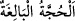

haram kabul ettik. Sen ise ‘Allah Teâlâ şirki yasaklamıştır ve sizin haram kabul
ettiklerinizi
haram
kılmamıştır.’
şeklindeki
sözünde
yalancısın.”
diyerek
“yalanlamışlardı da nihayet azabımızı tatmışlardı.” yalanlamaları karşılığında onlara
azabımızı indirmiştik.
“De ki: “Yanınızda” bu iddia ettiğiniz şeylerin doğruluğunu “bize çıkaracağınız”
göstereceğiniz “bir bilgi var mı?”
Allah’a ortak koşma ve haram olmayan bazı şeyleri yasaklama hususunda hiçbir ilme
ve kesin bilgiye dayanmaksızın “siz sadece” bâtıl bir “zanna uyuyorsunuz ve siz
sadece yalan söylüyorsunuz.” AllahTeâlâ’ya yalan isnad ediyorsunuz.
149. De ki: Kesin delil, ancak Allah’ındır. Allah dileseydi elbette hepinizi doğru
yola iletirdi.
“De ki: “Üstün delil Allah’ındır.” Yani ey müşrikler, sizin hiçbir deliliniz olmadığı
ortaya çıktığına göre üstün delil Allah’ındır. (
) “üstün delil”, sağlamlığın ve
kesinliğin en son noktasında olan açık delil demektir. Ya da sâhibinin, sâyesinde
davâsının doğruluğunu ortaya koyduğu delildir. Bu delilden maksad, Kitab, peygamber
ve beyandır.
“Allah” tamâmınızın hidayetini “dileseydi, elbette hepinizi doğru yola iletirdi.” Sizi
hidayete muvaffak eder, o yola sevk ederdi. Ancak Allah, hak yoluna yönelenlerin de,
dalalete sapanların da seçtikleri yolu kendi iradeleriyle tercih etmelerini murad etmiştir.
150. De ki: Allah şunu yasak etti, diye şehadet edecek şâhitlerinizi getirin! Eğer
onlar şâhitlik ederlerse, sen onlarla beraber şâhitlik etme; âyetlerimizi
yalanlayanların ve ahiret gününe inanmayanların arzularına uyma. Onlar,
Rablerine eş tutuyorlar.
De ki: “Haydi Allah bunu haram etti diye, şâhitlik edecek şâhitlerinizi getirin.”
Şahitler onların sözlerine ve görüşlerine destek çıkan rehberleridir. Kim olursa olsun,
onların iddiâlarının doğruluğuna şâhitlik eden değildir. Bu sebeble ayetteki “şâhitler”
kelimesi kendilerine izâfe edilmiştir.
Şâhitlerini getirmekle emrolunmaları, delille onları bağlayıp susturmak ve dalalette